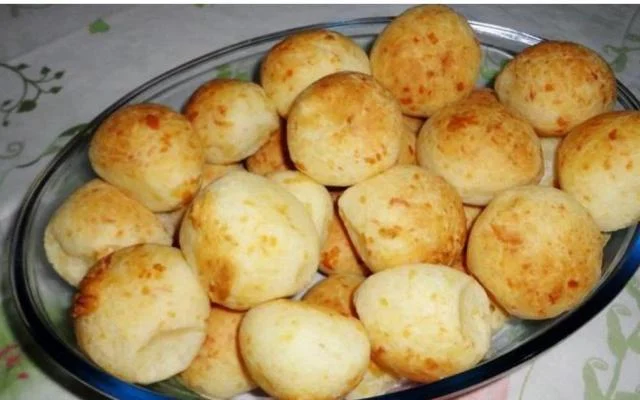

Receitas
Bolinha de chuva
Itens utilizados:
- 2 ovos
- 1 xícara de açúcar
- 1 xícara (chá) de leite
- 1/2 xícara de farinha de trigo
- 1 colher (sopa) de fermento em pó
- 3 colheres (sopa) de açúcar para polvilhar
- 1 colher (sopa) de canela para polvilhar
- 1 litro de óleo para fritar
Modo de preparo:
- Misture todos os ingredientes até obter uma massa cremosa e homogênea.
- Deixe aquecer uma panela com bastante óleo para que os bolinhos possam boiar.
- Quando o óleo estiver bem quente (180º C), com uma colher, coloque pequenas quantidades de massa e frite até dourar.
- Coloque os bolinhos sobre papel absorvente e passe-os no açúcar com canela.

Pão de queijo
Itens utilizados:
- 2 copos americanos de leite
- 1 copo americano de água
- 1/3 de copo americano de óleo
- 1 colher de sopa de sal
- 500 g de polvilho doce
- Queijo ralado a gosto
- 3 ovos inteiros
Modo de preparo:
- Ferva o leite com a água e o óleo.
- Em uma vasilha, misture o polvilho e o sal.
- Jogue o líquido fervido e misture com uma colher grande.
- Espere esfriar e despeje o queijo ralado e os ovos.
- Misture a massa com a mão até ficar bem homogênea.
- Faça bolinhas do tamanho que preferir.
- Asse em forno bem quente até dourar.
- Sirva quentinho.
Enroladinho de salsicha
Itens utilizados:
- 1 pacote de massa de pastel grande (500g)
- 8 salsichas
- 150 g de queijo fatiado (usei queijo prato zero lactose)
Modo de preparo:
- Corte as salsichas e as fatias de queijo ao meio.
- Coloque o queijo no meio da massa de pastel.
- Dobre as laterais para dentro, coloque a salsicha e enrole com cuidado para não rachar a massa.
- Faça todos os enroladinhos.
- Pré-aqueça a air fryer por 5 minutos a 200°C.
- Asse os enroladinhos por 10 minutos a 200°C.